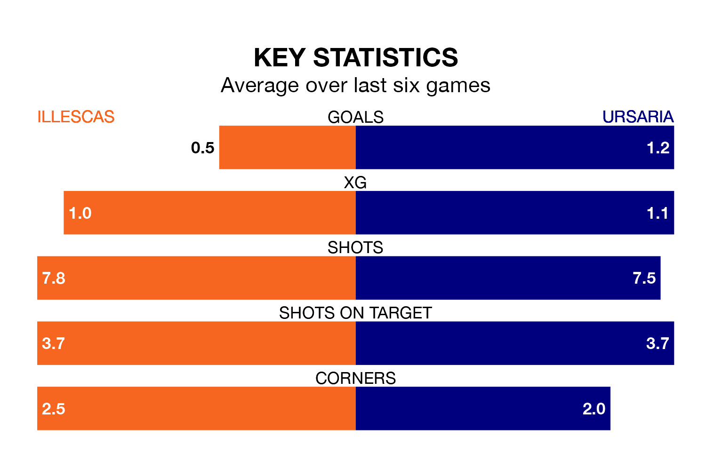

Illescas face Ursaria at Estadio Municipal de Illescas on Sunday looking to secure a first win in eight Segunda División RFEF Group 5 games.
Illescas have lost four and drawn three matches since they last earned three points – against CDA Navalcarnero on February 18.
They face an Ursaria side who have won four and lost three over that time.
With 30 goals in 30 games so far this season, Ursaria are scoring at below the league average rate with 1.0 goals per game. And they are conceding more than average, letting in 35 goals at a rate of 1.2 per game.
Illescas, meanwhile, are average scorers, with 1.1 goals per game. They have conceded 0.9 goals per game.
The hosts are seventh in the table after 30 games, of which they have won 11 and drawn 10, earning 43 points.
The away side are five places behind Illescas in 12th, with 10 wins and eight draws putting them on 38 points.
Illescas's last match was on Sunday, a 2-2 draw against UD San Fernando, with Víctor García Mingo and Víctor Rodríguez Bravo getting the goals for Illescas.
Ursaria lost 1-0 against Atlético Paso last time out, also on April 7.
Updated: 11:20 (UTC), 09/04/24